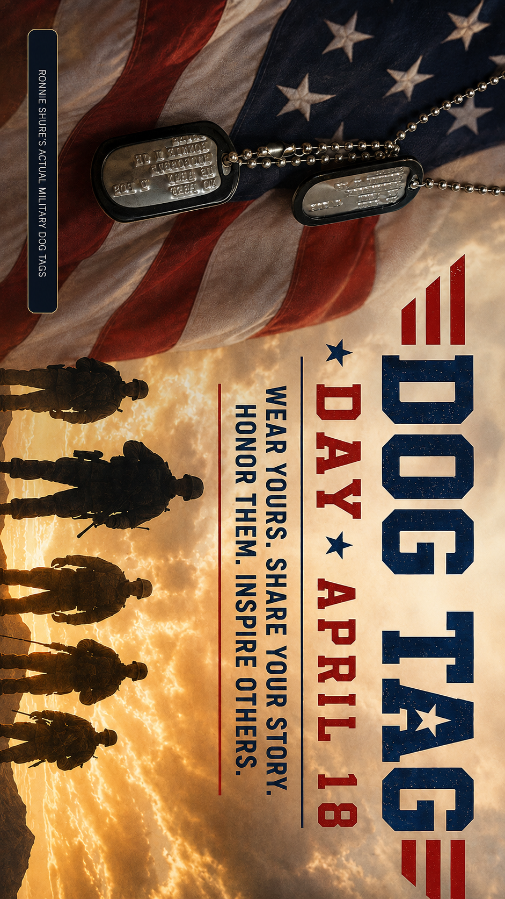

Wear the tags
If you served, wear or display your military dog tags.
Once the uniform comes off, military service can become invisible. Dog Tag Day gives America one simple way to say: I see you.

They live, work, shop, raise families, and stand beside us every day. Often, we never know they served.
If you served, wear or display your military dog tags.
Families may display the tags of someone they love or remember.
A nod, handshake, fist to the heart, or simply “I see you.”
With permission, tell the story behind the tags.

Dog Tag Day is more than one date. The work continues all year by preserving stories, connecting veterans who ask for help with trusted resources, and building participation for April 18.
Record veteran stories and service histories with permission.
Guide veterans who ask for help toward trusted local resources.
Help communities participate meaningfully across America.

Neighbors. Coworkers. Parents. Friends. Veterans often blend quietly into everyday life.

The uniform may come off, but the story does not disappear.

The effort is reaching communities across the country.

RONNIE SHURE
Founder & CEO
Dog Tag Day Foundation
Your support helps preserve stories, build April 18 participation, and connect veterans who ask for help with trusted resources.